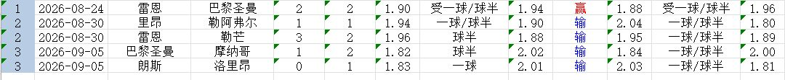
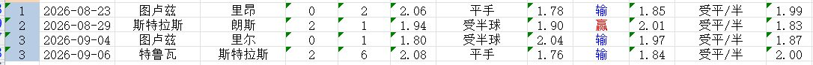
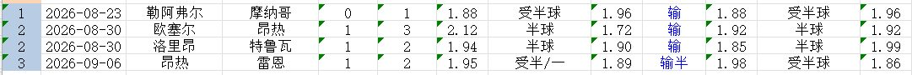

即日起，宝哥将不断总结盘口规律，以期对大家竞猜带来帮助！
新赛季，法甲初盘共出现5次一球/球半深盘，结果让球方仅取得1胜2平2负的战绩。只有雷恩主场3-2险胜勒芒，赢球输盘。
大巴黎两次出现，结果客场2-2平雷恩，主场1-2不敌摩纳哥。
另外两场，里昂主场1-1平勒阿弗尔，朗斯主场0-1不敌洛里昂，爆出大冷。

4场客队让平半的法甲赛事，让球方取得了3胜1负的战绩，只有联赛第2轮，朗斯客场1-2不敌斯特拉斯堡，其他场次，里昂、里尔和斯特拉斯堡做客让平半时，都顺利拿到了3分。

4场半球盘，无论是主队让球，还是客队让球，都是做客的一方最后拿下了比赛。

欢迎大家收藏宝哥首页，请分享给好友或转发到朋友圈，让更多人看到我。
安卓用户可以下载APP，更便捷看到宝哥每天的动态！